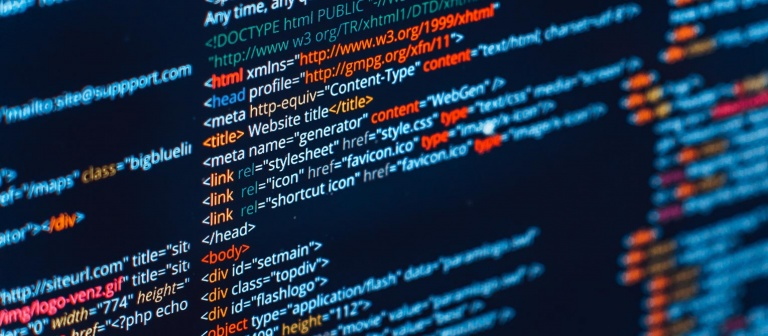
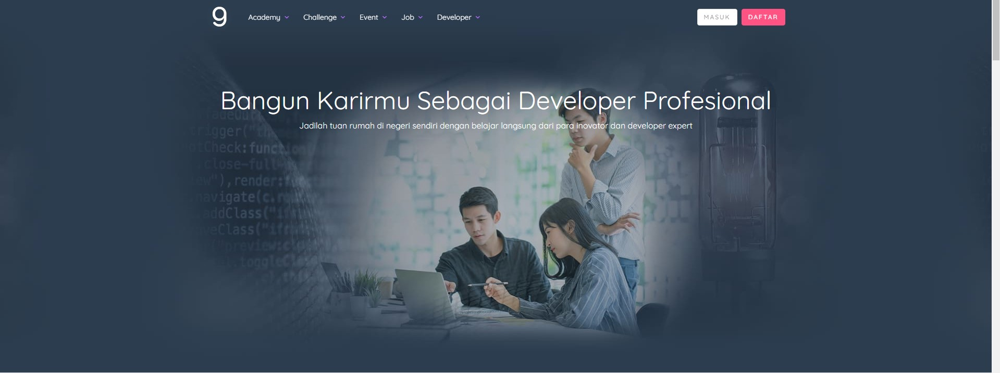

Web Developer

Web Developer adalah seseorang yang berhubungan dengan pembuatan suatu website. Seorang Web Developer menciptakan aplikasi berbasis web dengan menggunakan bahasa pemrograman. Tugas dari Web Developer ini menjadi penghubung dari seluruh sumber daya yang dibutuhkan untuk pembuatan website. Antara lain seperti pembuatan database, mengatur domain, membuat tampilan web yang dinamis, dan masih banyak lagi tugas dari seorang Web Developer. Tugas mereka akan berakhir jika website yang dibuat sudah siap untuk digunakan dan tidak terdapat masalah dalam penggunaan website tersebut.
Dalam pembuatan aplikasi berbasis web dibutuhkan suatu bahasa pemrograman yang harus benar-benar dipahami oleh Web Developer, seperti JavaScript, PHP, ASP, Phyton, Java, MySQL, dan lain-lain. Karena sudah dibingungkan dengan bahasa pemrograman yang rumit, bisa dikatakan seorang Web Developer tidak terlalu memikirkan mengenai penampilan website. Tidak memikirkan tampilan website bukan berarti tampilan yang dihasilkan berantakan ya, mereka hanya akan membuat tampilan website menjadi dinamis. Lalu bagaimana dengan design website? Bukankah website yang nyaman untuk dipandang juga dibutuhkan untuk membuat pengunjung betah di situs web Anda? Untuk mendesign web menjadi lebih indah dan nyaman merupakan tugas dari Web Designer.
Web Designer
Lalu bagaimana dengan design website? Bukankah website yang nyaman untuk dipandang juga dibutuhkan untuk membuat pengunjung betah di situs web Anda? Untuk mendesign web menjadi lebih indah dan nyaman merupakan tugas dari Web Designer. Ya disinilah tugas web designer dimulai. Web Designer adalah seseorang yang bekerja dengan unsur-unsur visual pada suatu website. Merekalah yang bertugas untuk memercantik penampilan halaman web.
Web designer lebih sering bekerja bersama gambar-gambar visual, warna, animasi, video, dan lebih ke multimedia. Mereka lebih akrab dengan Client Side Scripting seperti HTML, CSS, dan JavaScript. Web designer biasanya akan memercantik penampilan website dengan memanipulasi image yang biasa sudah diedit terlebih dahulu menggunakan Adobe PhotoShop, CorelDraw, dsb. Jika penampilan website Anda masih kurang menarik, bisa kok meminta bantuan dari seorang Web Designer.
Contoh Desain Web 2020
Sebagai profile digital sebuah perusahaan atau seseorang, website sudah selayaknya ditampilkan dengan baik dari aspek desain, konten dan lainnya. Khusus untuk aspek desain, saya masih yakin bahwa masih sangat banyak orang yang menilai buku dari sampulnya. Maka dari itu, di artikel ini kita akan explore berbagai macam contoh desain website. Tentunya, contoh-contoh desain yang akan kita telaah bersama-sama adalah contoh desain website yang terkenal, terbukti ramai dikunjungi dan juga paling in di tahun 2020.
Dicoding

Desain halam depan website Dicoding ini keren karena:
Headline Dicoding yang lugas; Bangun Karirmu Sebagai Developer Profesional; Jadilah tuan rumah di negeri sendiri dengan belajar langsung dari para inovator dan developer expert.
Warna pilihan untuk CTA dipilih yang kontras sehingga pengunjung ‘digiring’ untuk langsung dapat melihatnya.